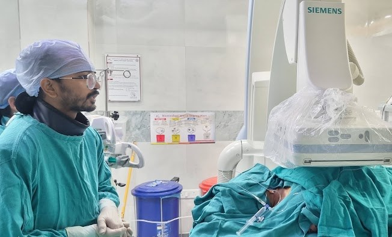

Doctor by training. Educator at heart. Creative by instinct.
Dr. Bhaskar Das is an Interventional Radiologist — currently FVIR (Fellowship in Vascular & Interventional Radiology) at the Institute of Liver & Biliary Sciences, New Delhi — practising the full breadth of body IR, with a prime specialisation in liver and biliary interventions. Off the table: teaching, tech and the occasional startup idea.

One doctor, several hats.
Dr. Bhaskar Das completed his MBBS followed by MD Radiology at Gauhati Medical College & Hospital, then did his senior residency at the State Cancer Institute, Guwahati with a focus on interventional radiology. Then he completed his Fellowship in Vascular & Interventional Radiology at ILBS, New Delhi.
Beyond the cath lab, Dr. Bhaskar is a medical educator — writing IR notes for students and residents — with a standing interest in technology, AI and entrepreneurship, including two years spent building ed-tech products before residency.
Read the Full JourneySmall pinholes. Big outcomes.
Interventional Radiology treats disease with minimal invasion such as a needle, a catheter and live imaging instead of a scalpel.
Image-guided, not open
Every procedure is guided in real time by ultrasound, CT or fluoroscopy — precision over incision.
Body IR, broad and deep
From embolizations and drainages to vascular work — across the body with an interest and prime specialisation in liver and biliary interventions.
Faster recovery
Most procedures use local anaesthesia and a tiny incision — often day-care, with a much quicker return to normal life.
Radiology notes that actually make sense.
Dr. Bhaskar's IR Notes and other learning resources for medical students and residents — case-based, exam-oriented, and clear.
ResearchMultiple publications, one ongoing study.
Published work across radiology and IR, plus Dr. Bhaskar's ongoing study on Y90 TARE for hepatocellular carcinoma at ILBS.
Find Dr. Bhaskar online
For collaborations, referrals, or just to talk shop about medicine — reach out on any of these.